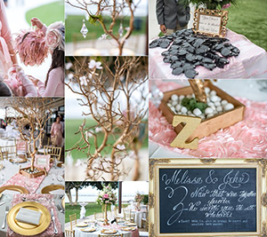
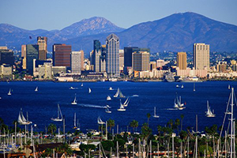
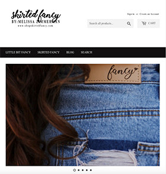
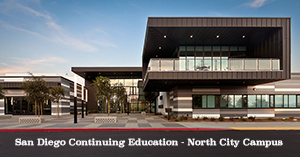
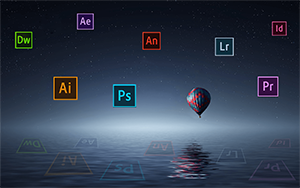

My journey thus far has been an interesting one. Five years ago, I would have never imagined I would be interested in working in this industry. I wouldn't have believed you if you told me I would actually enjoy it more than any other work I've done before. Yet, here I am, learning (and enjoying) new skills every day and looking forward to using my skills to contribute to the success of my future employer.
December of 2006 I was in my senior year of college, close to graduating with a 4 year business degree from the University of Central Arkansas. Like most young adults with the world at their fingertips, I was struggling to decide which direction to take my career. There were so many options and I had so many interests. My dad was a computer programmer, my mom was a teacher, and they taught me the value of education and hard work so I was eager to start my career- but which was the best direction to choose?
Around that same time, I was in the market for a new vehicle. My father's car dealer friend offered to take me to a local auto auction, so I could find a good deal on the car I wanted. From the moment I walked in the door of the auction house, my adrenaline kicked in as there was so much to see and hear with cars and people rushing all around me. I knew immediately that I would be back- I was addicted. I returned pretty soon after that day, then jumped through all the hoops to become a licensed dealer pretty quickly after that, and soon I making a full-time income flipping cars.
As it turned out, going to the auction that day was a life changer for me. A few years later in 2010, I found myself sitting in my office, my pick of the many options in a 14,000 sq foot building in the middle of 4 acres of cars, trucks, and suvs. It was exhilarating to own this bustling dealership that I had built by investing countless hours of my own life. By working hard and learning the industry, in four years my team and I had built the largest independent dealership in Central Arkansas. In the years that followed, we continued to build the dealership, learning many lessons in leadership, management, sales, and teamwork along the way.
On July 21, 2012, my life changed and would never be the same. I met a beautiful girl from San Diego, California. I fell in love with her quicker than I ever imagined I could, and have stayed there ever since. From the month we met, I made regular trips out to San Diego, and I really loved the city.  She was in law school at the time, so we had to wait until she graduated and passed the bar exam to get married. A year later, we married in Point Loma and I somehow convinced her to relocate to my hometown, Little Rock, Arkansas. Marrying her was definitely the best decision I've ever made! In July of this year, we will celebrate our sixth anniversary. The last six years have been the best part of my journey so far. In November 2018, we found out that we are expecting our first child, due on July 25, 2019.
Going back a bit to October of 2015, I sold the dealership that I had built and owned for nearly a decade. I started working at Steve Landers Toyota, the largest Toyota dealership in a five-state region. Being very much a "people person," I naturally excelled in this role, both with my team and customers. In October of 2016, I was awarded the Salesman of the Month award out of a 50+ person sales team, based on both profit and total sales. Working at Steve Landers Toyota was a valuable and rewarding experience, and it allowed me to make some great connections along the way.
While working at Landers, my wife and I discussed moving to San Diego. The hours I had been working were long, and often I wouldn't get home until close to midnight. My wife missed her large family, her hometown and the ocean. Finally, we decided we were both ready for a new chapter in our life and in May of 2017, we decided to sell our home and relocate to San Diego.
Before we made the move, my wife and I started a fashion IG account called Skirted Fancy. It was a natural extension of her old blog that had been able to gain a decent following and worked out perfectly with her as the model and me as the photographer. Our IG following grew from zero to over 80K followers.  Based off of the success of our original IG account, we were able to build a successful Shopify boutique and sell it just two years later for a significant profit. We have since launched a second Shopify store selling my wife's original design denim skirts that we produce ourselves. I am very active on a daily basis managing our Shopify store, our social media accounts, and daily logistics.
With my organic experience in eCommerce, I started researching the technology industry. Specifically, I found graphic design and front end web development to be "right up my alley" and decided to research those options as a new career path. I found that the employment of web developers was projected to grow 27% from 2014 to 2024, and that the demand for developers continued to climb along with the growth of the internet. I had always enjoyed working on computers, although I didn't know how to code or use any programs like Creative Cloud at that point.
In July of 2018, I enrolled in the Interactive Media Certificate Program (IMCP) at San Diego Continuing Education. This course was a big time commitment and I have been a full time student since then. Interactive Media consists of three modules: Print (Adobe Photoshop, Illustrator, and inDesign); Multimedia (Garageband, Audacity, Audition, Adobe After Effects, and Premiere Pro); and Web (Wordpress and Dreamweaver). IMCP changed my life and allowed me to develop working skills with all of Adobe's Creative Cloud programs. During the three modules, I was in class for 2,625 hours over 36 weeks and I completed the program in January 2019 with a certificate in each module.
Along with IMCP, I started the Front End Web Development Certificate Program in the Fall of 2018. The web developer program is divided into two parts, Front End Web Developer I, and II. Front End Web Developer I covers all topics related to HTML5, CSS3, designing protypes with Azure RP Pro and Photoshop, and SEO. Part I lasted for 18 weeks and consisted of over 13 projects coded in Brackets, 10 quizzes, one final project, and one final exam. For the final project, we created a functional, 10-page website for a local San Diego business. We created low, medium, and high fidelity prototypes using Azure RP Pro and Photoshop, then turned those prototypes into code with Brackets, using the CSS Grid system and launching a live website online. The end project is available on Github (there's a link to my Github account at the bottom of this page).
Front End Web Developer II, consists of another 18 weeks of lecture and work, primarily focusing on Javascript, but also covering some aspects of Full Stack Development, including jQuery, SASS, JSON, AngularJS, NodeJS, React.js, and Vue.js. This Part II program is designed to help student develop the advanced development skills that needed to thrive in the workplace today. I will finish this course in early June 2019.
My goal as a designer and developer at this point is to continue to develop my skills in each program and make myself increasingly valuable in the industry. I am searching for a company where I can contribute not only my constantly-expanding knowledge and skills in the design and development world, but also the experience I gained during the past decade as a teamplayer and creative problem solver.